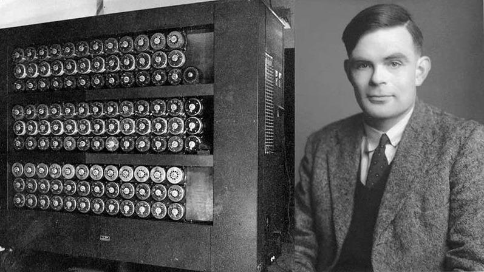

Alan Turing naît en 1912. C'est un mathématicien britannique. IL fait ses études à l’université de Cambridge et il s’intéresse aux mathématiques, à la logique et aux machines capables de réaliser des calculs.
En 1936, il publie un article scientifique dans lequel il décrit une machine appelée machine de Turing. Cette machine n’est pas un ordinateur réel mais un modèle permettant d’expliquer comment une machine peut suivre des instructions et résoudre des problèmes étape par étape. Ce principe est à la base du fonctionnement des ordinateurs et des programmes informatiques.
Pendant la Seconde Guerre mondiale, Alan Turing travaille pour le gouvernement britannique. Il participe au décryptage des messages secrets allemands produits par la machine Enigma. Grâce à ses recherches et aux machines qu’il aide à concevoir les Alliés parviennent à lire de nombreux messages codés ce qui joue un rôle important dans le déroulement de la guerre.
Après la guerre, Turing poursuit ses travaux sur les premiers ordinateurs et s’intéresse également à une nouvelle idée : l’intelligence artificielle. Il se demande si un jour les machines pourront penser ou imiter l’intelligence humaine. Pour cela, il propose un test appelé le test de Turing.
Aujourd’hui, Alan Turing est reconnu comme l’un des fondateurs de l’informatique moderne. Il a influencé le développement des ordinateurs, des logiciels et de l’intelligence artificielle.